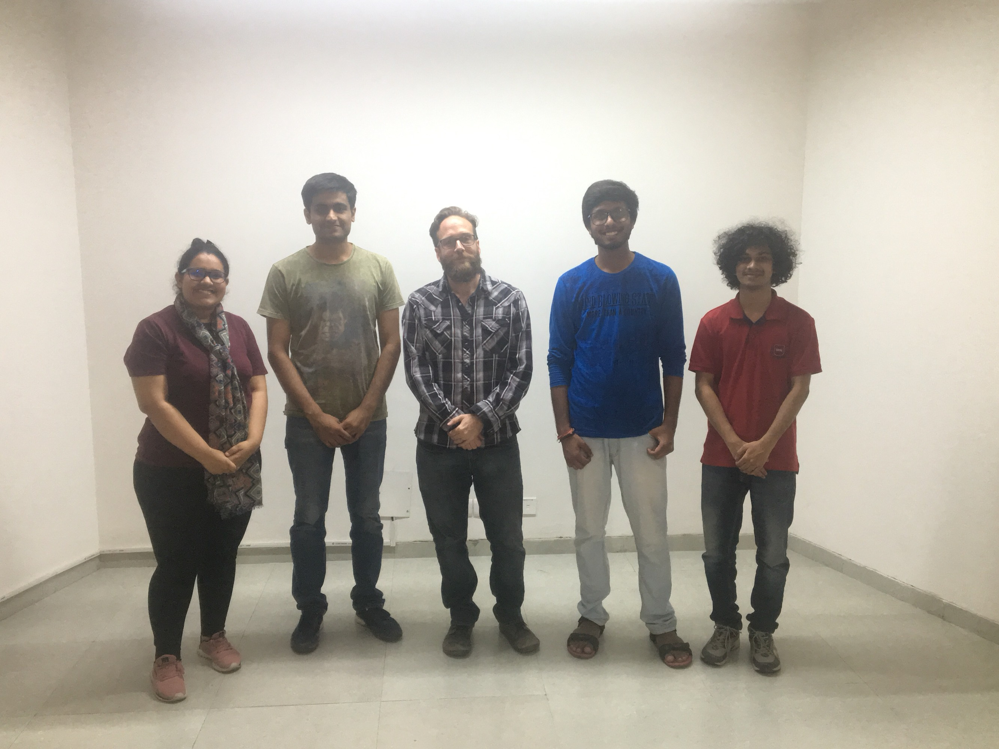

Data Sonification
Hobby project - Common Cross-Modal MIDI Toolbox
Python-based Toolbox for Converting, Editing and Transfering MIDI
.png)
Summary
 As a team, we wanted to build an audio interface for enabling MIDI-based creative transformations. We developed a toolbox to enable artists in converting different types of files to MIDI messages, while giving them freedom to transform and manipulate them using the feature set on the GUI. These MIDI are then, sent to an output channel for interaction with various related software, such as SuperCollider and Reaper. The relevance of such a graphical user interface was understood after realizing the limitations in the existing digital audio workstations. Future iterations of the work will have artificial intelligence embedded capabilities for assisting music creation.
As a team, we wanted to build an audio interface for enabling MIDI-based creative transformations. We developed a toolbox to enable artists in converting different types of files to MIDI messages, while giving them freedom to transform and manipulate them using the feature set on the GUI. These MIDI are then, sent to an output channel for interaction with various related software, such as SuperCollider and Reaper. The relevance of such a graphical user interface was understood after realizing the limitations in the existing digital audio workstations. Future iterations of the work will have artificial intelligence embedded capabilities for assisting music creation.
My responsibilities
- I was responsible for working on audio modality in the system.
- I was directly involved in expanding the control given to users in terms of introducing innovative pixel operations and gestures like mouse swipe up, mouse swipe down etc. on input image files through the GUI.
- I designed a wide list of output parameters in audio like volume, melody, mood(dissonant or consonant decisions), panning, scale, pitch, keys, stylistic ranges and transfers that were embedded in the system for achieving the creative process.
- I came up with new ideas to separate the components of an audio file, through new algorithms like blind source separation.
- I, along with my team designed the user study for testing the aesthetics in the output creation of the system and measuring the creative capability of the system keeping in mind the operator and data biases prevalent in such systems.
- I learnt non-linear mappings between projected images and audio samples.
- I developed linear and non-linear envelopes on data filters along with other common features present in DAWs.
- I prepared the team for the development of a prospective real-time output system which would involve integrating generative artificial intelligence at the backend.
I worked on this project with my excellent and technically proficient ILIAD lab teammates Brihi Joshi (pursuing B.Tech in IIIT-Delhi), Aditya Adhikary (pursuing B.Tech in IIIT-Delhi) and Prashant Sharma (pursuing B.Tech in IIIT-Delhi). Brihi was responsible for working on image files, Aditya worked on video files, Prashant worked on csv files and I worked on audio files. Dr. Timothy Scott Moyers Jr. was the advisor for the work.
Graphical user interface
 We realized the need for a system that enables MIDI manipulations for artists working on various DAWs and VSTs. We wanted to create a backbone of MIDI or OSC messages that artists can have a control of while making digital transformations. We developed an interactive toolset for seamless data sonification from various types of file formats like video, image, audio and csv file types. The MIDI or OSC messages obtained on the GUI, are made available for manipulation by users/artists using the provided transformations on the feature set in the GUI. Finally, they are sent for communication with different audio, visual and related software (such as SuperCollider and Reaper). We used this to develope a pipeline for bridging Audio and Visual Engines with real-time modifications.
We realized the need for a system that enables MIDI manipulations for artists working on various DAWs and VSTs. We wanted to create a backbone of MIDI or OSC messages that artists can have a control of while making digital transformations. We developed an interactive toolset for seamless data sonification from various types of file formats like video, image, audio and csv file types. The MIDI or OSC messages obtained on the GUI, are made available for manipulation by users/artists using the provided transformations on the feature set in the GUI. Finally, they are sent for communication with different audio, visual and related software (such as SuperCollider and Reaper). We used this to develope a pipeline for bridging Audio and Visual Engines with real-time modifications.
 In the first phase of the system, the images are MIDI extracted and transformed according to a set of operator-defined instructions. These patterns are then sent through our output channels to create music using output mediums like SuperCollider and Reaper. Different types of images expressing different moods or intentionalities, for example, anger and happiness are fed and perceivable differences are measured across all users. We wanted to find parameters of the input image corresponding to the output audio that represent an input-output pattern across different users, different fed data and different input user operations. The system is designed such that users are given as much control in the creative process that enables them to relate to the output changes according to the input actions fed by them. These include the type of input fed, the rate at which the input is fed and the duration for which input is fed. We aim to create a system where, if the user makes a change in the system, there is an obvious change in the output i.e. there is a discernable way to learn the processes that aides the music creation process. The second phase of the system is responsible for generating novel patterns that complement the output audio structure of the first phase. This is still ongoing and will embed artificial intelligence assisted backend for more creative output solutions. The system iteratively tries to learn the output on the parameters set by the user and the operations defined by the user in the GUI.
In the first phase of the system, the images are MIDI extracted and transformed according to a set of operator-defined instructions. These patterns are then sent through our output channels to create music using output mediums like SuperCollider and Reaper. Different types of images expressing different moods or intentionalities, for example, anger and happiness are fed and perceivable differences are measured across all users. We wanted to find parameters of the input image corresponding to the output audio that represent an input-output pattern across different users, different fed data and different input user operations. The system is designed such that users are given as much control in the creative process that enables them to relate to the output changes according to the input actions fed by them. These include the type of input fed, the rate at which the input is fed and the duration for which input is fed. We aim to create a system where, if the user makes a change in the system, there is an obvious change in the output i.e. there is a discernable way to learn the processes that aides the music creation process. The second phase of the system is responsible for generating novel patterns that complement the output audio structure of the first phase. This is still ongoing and will embed artificial intelligence assisted backend for more creative output solutions. The system iteratively tries to learn the output on the parameters set by the user and the operations defined by the user in the GUI.
Member, ILIAD Lab, IIIT - Delhi
ILIAD Lab stands for Interdisciplinary Lab for Interactive AV Development. The name has been adopted from a Greek poem attributed to Homer. This is the creative and audio lab at IIIT-Delhi and I am a member of the team working under Dr Timothy Scott Moyers Jr(Tim). Tim has a philosophical and innovative side to his personality and we usually have on the walk discussions with him regarding the universal patterns in music. We also get a taste of the different types of music (and noise) which are and have remained prevalent, and the great musicians that have flourished throughout history when we are with him. It's a lab for fun and creativity with no deadlines for any work. Everyone just loves the company of each other, and find themselves involved in work together. We build toolkits for people that help in enabling creative capabilities for artists.